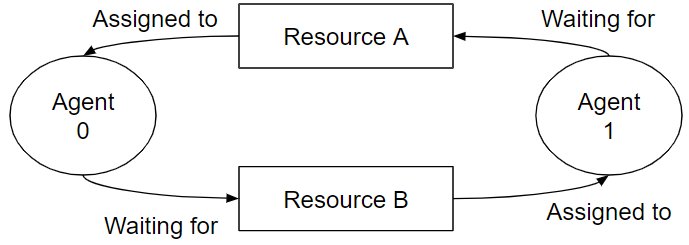

XLS-NoC Glossary
Adaptive Routing
An adaptive routing algorithm derives a route using any information about the network’s state.
Channel
A channel interconnects a pair of nodes and is the medium that transfers data amongst the pair. A node is either a router input, a router output or an endpoint port. A channel may be unidirectional, transferring the data in a single direction, or bidirectional, transferring the data in both directions.
Endpoint
A node connected to the network that communicates to other endpoints using the network.
Endpoint Port
An endpoint port is a port that connects to an endpoint. There are two types of endpoint ports: a send port and a receive port. A send port enables an endpoint to send data to the network and a receive port enables an endpoint to receive data from the network. The naming convention for a send port and receive port is from the perspective of the endpoints.
Deadlock
A deadlock occurs when a set of agents holding resources are waiting on another set of resources such that a cycle of waiting agents is formed, implying that agents are unable to make progress.

Figure Deadlock_Example. A deadlock example with two agents and two resources.
Figure Deadlock_Example shows a deadlock example with two agents and two resources. In the example, agent 0 is waiting for resource B that is assigned to agent 1, and agent 1 is waiting for resource A that is assigned to agent 0. The dependency cycle created with agent 0 and 1 demonstrate that the agents are unable to make progress.
Flit
A flow control digit, or flit, is the smallest unit of resource allocation in a router. Variable length packets are divided into one or more fixed length flits to simplify the management and allocation of resources. Flits may be divided further into phits when traversing a router.
Flow Control
Flow control is the scheduling and allocation of a network’s resources. For example, a virtual channel can have a wormhole flow control.
Hotspot (Hot-spot)
A hotspot resource is one whose demand is significantly greater than other, similar resources. For example, a particular destination terminal becomes a hotspot in a shared memory multicomputer when many processors are simultaneously reading from the same memory location (for example, a shared lock or data structure). Another example is traffic congestion within an area of the network.
Livelock
Livelock occurs when a packet is not able to make progress in the network and is never delivered to its destination. Unlike deadlock, a livelocked packet continues to move through the network.

Figure Livelock_Example. A example with livelocked packet P1.
Figure Livelock_Example shows a livelock example. In the example, there are two packets, P0 and P1. The destination router for the packets is router R2. R1 uses an adaptive routing algorithm. At timestep 1, P0 and P1 are at router R0. Given the routing algorithm at R0, R0 routes packet P0 to R2 and P1 to R1 (timestep 2). At timestep 3, another instance of P0 is routed to R0 and P1 is routed to R2. At timestep 4, P1 is routed to R0. After the arrival of P1 at R0. The state of R0 is identical to timestep1 where these sequence of events will repeat. In the end, P1 does not arrive to its destination although it makes progress, thus livelocked.
Network-On-Chip (NoC)
At a high level, a Network-On-Chip (NoC) is a network designed for one chip. It is composed of routers, channels and endpoint ports. It transports data between endpoints connected to it. Although the design is intended for a single chip, the logical description can be partitioned across multiple chips.
Oblivious Routing
An oblivious routing algorithm derives a route without using any information about the network’s state, where, fundamentally, the route is computed using solely the source and the destination.
Packet
Packets are the unit of routing within an interconnection network. Messages are broken into one or more variable, but bounded, length packets for processing by the network. All data contained within a packet follow the same route through the network and packets are reassembled into messages at the destination node. A packet is divided further into flits.
Phit
A physical digit, or phit, is the smallest unit of data processed (e.g. traversing or accessed) by a router. One or more phits are combined to form a flit.
Port
A port is a physical gateway to a component (input port) or from a component (output port).
Router
A router receives packets on its inputs, determines the packets' destination based on the routing algorithm, and forwards the packets to the appropriate output.
Routing Algorithm
The series of steps for choosing a path for a packet through the network. For a packet, the routing algorithm determines the router's output from its input.
Topology
The static arrangement of router nodes, channels, and endpoint ports in a network. The topology affects the routing in the network.
Virtual Channel
A virtual channel (VC) is a logical representation of a channel at a router's input or output. It is composed of flit buffers within the router. In a router that handles virtual channels, a packet or flit is assigned to a virtual channel. Hence, the presence of virtual channels at a router's input or output enables the transfer of multiple packets through a single channel.
Wormhole Flow Control
Wormhole flow control defines the allocation of a resource at the flit granularity. Upon a successful allocation, the transfer of the flit is permitted to commence.
References
William James Dally and Brian Patrick Towles. 2004. Principles and Practices of Interconnection Networks. Morgan Kaufmann Publishers Inc., San Francisco, CA, USA.